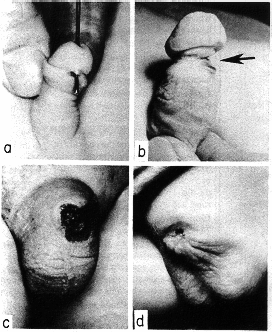

Complications of circumcision
This directory contains articles about the complications, risks, adverse effects, and disadvantages of circumcision and their treatments (not including repair of the circumcision itself; see Foreskin reconstruction). See also Psychological Impacts of Circumcision.
|  | [A] Urethral fistula at frenulum (note probe), probably the result of incisional trauma. [B] Three-year-old boy with an almost transected glans from circumcision at birth, but parents did not note the abnormality until age 3. Urethra had been completely transected (arrow). [C] Neonate referred immediately after Gomco clamp circumcision in which all the skin of the shaft had been amputated. This is a fairly common complication caused by pulling too much skin up into the clamp and amputating it. Fortunately sometimes there is enough of the mucosal side of the prepuce to fold back to resurface the shaft, but some require a free skin graft. [D] Six-month-old baby was referred after loss of the entire penis from cautery used during circumcision. Evidently both corpora had thrombosed and sloughed, so no phallus remained. |
| (From the textbook Pediatric Trauma, edited by Robert J. Touloukian, M.D., Yale University School of Medicine (John Wiley & Sons). | |
Medical journal articles about complications are divided into case reports, propective studies, retrospective studies, and literature survey articles. Case reports report individual cases. Prospective studies are forward looking studies that record the complications experienced by a particular group of infants. Retrospective studies look backward by examination of medical and/or hospital records. Survey articles provide a summary of the existing medical literature.
Case report articles provide information about the variety and incidence of complications of circumcision but do not provide information on the total number of complications that result from circumcision. Cases are reported only when the complication has not been previously seen or when new information can be added to the store of medical knowledge of treatment or management.
The incidence of complications, risks, and adverse effects of male circumcision is controversial. There is wide disagreement on what constitutes a complication. Some studies only record immediate in hospital complications, while other studies record complications that occur later in life. Needless to say, these variations cause a wide range in the reported incidence of complications. None of the available prospective studies consider the sexual effects of male circumcision in adult life. The National Organization to Halt the Abuse and Routine Mutilation of Males (NOHARMM) has compiled statistical data on the estimated total number of complications and has made it available on the World Wide Web.
Williams and Kapila estimate that a realistic rate of complications from neonatal circumcision ranges from 2% to 10%. To many men who become aware of the function and value of the prepuce, the fact that this genital sensory organ was amputated from them at birth is itself a complication of circumcision; in which case, the actual complication rate is 100%... For males fortunate enough to survive the surgery without immediate complications, there is a growing awareness among men of other delayed, long-term consequences of neonatal circumcision, which are only now beginning to be documented.
--Awakenings (NOHARMM)

Prospective Studies of Circumcision Complications
Prospective studies of circumcision complications are controlled studies of the type and number of complications of circumcision that occur in a clinical setting. CIRP provides studies from Canada, England, New Zealand, Turkey, and the United States. Prospective studies usually provide information on the incidence (percentage of boys suffering adverse effects) of complications. Reported rates of complications range up to 55%.
- Patel H. The problem of routine infant circumcision. Can. Med. Assoc. J. (Sept 10, 1966); 95: 576-581.
- Metcalf TJ, Osborn LM, Mariani EM. Circumcision: a study of current practices. Clin Pediatr (Phila) 1983; 22: 575-579.
- Leitch IOW. Circumcision - a continuing enigma. Aust Paediatr J 1970;6:59-65.
- Griffiths DM. Atwell JD. Freeman NV. A prospective survey of the indications and morbidity of circumcision in children. European Urology 1985;11(3):184-7.
- Fergusson DM, Lawton JM, Shannon FT. Neonatal circumcision and penile problems: an 8-year longitudinal study. Pediatrics 1988; 81: 537-41.
- Ozdemir E. Significantly increased complication risk with mass circumcisions. Brit J Urol, Vol 80, Pages 136-139, August 1997.
- Van Howe RS. Variability in penile appearance and penile findings: a prospective study. Brit J Urol 1997;80:776-782.
- Mayer E, Caruso DJ, Ankem M, et al. Anatomic variants associated with newborn circumcision complications. Can J Urol 2003;10(5):2013-6.
- Corbett HJ, Humphrey GME. Early complications of circumcisions performed in the community. Br J Gen Pract 2003;53(496):887-8.
- Machmouchi M, Alkhotani A. Is neonatal circumcision judicious? Eur J Pediatr Surg 2007;17:266-9.
Retrospective Studies
Retrospective studies examine medical records. In a small retrospective study limited to the incidence of adhesions in circumcised boys, Gracely-Kilgore reported that 15 percent of circumcised boys experience adhesions. Three percent required surgical correction. El-Bahnasawy reported that circumcision is the most frequent cause of penile injury.
- Gracely-Kilgore KA. Penile adhesion: the hidden complication of circumcision. Nurse Pract 1984; 9: 22-4.
- Ahmed A, Mbibi NH, Dawam D, Kalayi GD. Complications of traditional male circumcision. Ann Trop Paediatr 1999;91(1):113-7.
- El-Bahnasawy MS, El-Sherbiny MT. Penile pediatric trauma. BJU Int 2002;90:92-96.
- Perovic SV. Severe penile injuries: etiology, management and outcomes. Urol Pol 2005;58(3):
Survey Articles
Survey articles survey the medical literature. They provide a summary of the literature. CIRP provides two of the best.
- Kaplan GW. Complications of circumcision. Urol Clin N Amer 1983;10:543-549.
- Williams N, Kapila L. Complications of circumcision. Br J Surg 1993; 80:1231-36.
Case reports
Case reports are reports of individual cases that have appeared in the medical literature regarding complications of circumcision. The list provided here is extensive but it is not comprehensive. There are other reports that are not listed here.
Ablation of the Penis
- Brown JB, Fryer MP. Surgical reconstruction of the penis. GP 1958; 17: 104-7.
- Money, John. Ablatio Penis: Normal Male Infant Sex-Reassigned As A Girl Archives of Sexual Behavior (New York) vol. 4 no. 1 January 1975 pp. 65-71
- Pearlman CK. Reconstruction following iatrogenic burn of the penis. J Pediatr Surg 1976;11:121-2.
- Pearlman CK. Caution advised on electrocautery circumcisions. Urology 1982;19:453.
- Gearhart JP, Rock JA. Total Ablation of The Penis After Circumcision With Electrocautery: A Method Of Management and Long-term Followup. Journal of Urology (Baltimore) vol. 142 no. 3 September 1989 pp. 799-801.
- Stefan, H. Reconstruction of the Penis Following Necrosis from Circumcision Used High Frequency Cutting Current. Sbornik Vedeckych Praci Lekarske Fakulty Karlovy Univerzity (Hradci Kralove) vol. 35, no. 5 (Suppl) 1992, pp. 449-454.
- Gilbert DA, Jordan GH, Devine CJ Jr, Winslow BH, Schlossberg SM. Phallic construction in prepubertal and adolescent boys. J Urol 1993; 149: 1521-6.
- Bradley SJ, Oliver GD, Chernick AB. Experiment of Nurture: Ablatio Penis at 2 Months, Sex Reassignment at 7 Months, and a Psychosexual Follow-up in Young Adulthood. Pediatrics 1998;102(1):e9.
Adhesions (see also Treatment of Phimosis)
- Marks MB. Preputial adhesions in the circumcised penis. Arch Pediatr 1939; 56: 458-9.
- Gracely-Kilgore KA. Penile adhesion: the hidden complication of circumcision. Nurse Pract 1984; 9: 22-4.
- Attalla MF, Taweela MN. Pathogenesis of post-circumcision adhesions. Pediatr Surg Int 1994; 9: 103-5.
- Ponsky LE, Ross JH, Knipper N, Kay R. Penile adhesions after neonatal circumcision. J Urol 2000;164(2):495-6.
Amputation of the penis
- Brimhall JB. Amputation of the penis following a unique method of preventing hemorrhage after circumcision. St Paul Med J 1902; 4: 490.
- Lerner BL. Amputation of the penis as a complication of circumcision. Med Rec Ann 1952;46:229-31.
- Levitt SB, Smith RB, Ship AG. Iatrogenic microphallus secondary to circumcision. Urology 1976; 8: 472-4.
- Izzidien AY. Successful replantation of a traumatically amputated penis in a neonate. Journal of Pediatric Surgery April 1981,16(2):202-203.
- Hanash KA. Plastic reconstruction of partially amputated penis at circumcision. Urology 1981; 18(3): 291-3.
- Azmy A, Boddy SA, Ransley PG. Successful reconstruction following circumcision with diathermy. Br J Urol 1985; 57: 587-8.
- Yilmaz AF, Sarikaya S, Yildiz S, et al. Rare complication of circumcision: penile amputation and reattachment. European Urology (Basel) 1993; 23(3): 423-424.
- Audry G, Buis J, Vazquez MP, Gruner M. Amputation of penis after circumcision--penoplasty using expandable prosthesis. Eur J Pediatr Surg 1994; 4: 44-5.
- Hanukoglu A, Danielli L, Katzir Z, Gorenstein A, Fried D. Serious complications of routine ritual circumcision in a neonate: hydro ureteronephrosis, amputation of glans penis, and hyponatraemia. Eur J Pediatr 1995; 154: 314-5.
- Gluckman GR et al. Newborn Penile Glans Amputation During Circumcision and Successful Reattachment. Journal of Urology (Baltimore), vol. 153 no. 3 Part 1 March 1995 pp. 778-779.
- Strimling BS. Partial amputation of glans penis during Mogen clamp circumcision. Pediatrics 1996; 97: 906-7.
- Neulander E, Walfisch S. Kaneti J. Amputation of distal penile glans during neonatal ritual circumcision -- a rare complication. Br J Urol 1996; 77: 924-5.
- Sherman J, Borer JG, Horowitz M, Glassberg KI. Circumcision: successful glanular reconstruction and survival following amputation. J Urol 1996; 156: 842.
- Van Howe RS. Re: circumcision: successful glanular reconstruction and survival following traumatic amputation (Letter). J Urol. 1997;158:550.
- Coskunfirat OK, Sayiklkan S, Velidedeoglu H.. Glans and penile skin amputation as a complication of circumcision (letter). Ann Plast Surg 1999;43(4):457.
- Siegel-Itzkovich J. Baby's penis reattached after botched circumcision. BMJ 2000;321:529.
- Park JK, Min JK, Kim HJ. Reimplantation of an amputated penis in prepubertal boys. J Urol 2001;165:586-7.
Anesthesia
- Sara CA, Lowry CJ. A complication of circumcision and dorsal nerve block of the penis. Anaesth Intensive Care 1985; 13: 79-82.
- Berens R, Pontus SP Jr A complication associated with dorsal penile nerve block. Reg Anesth 1990; 15: 309-10.
- Snellman LW, Stang HJ. Prospective evaluation of complications of dorsal penile nerve block for neonatal circumcision. Pediatrics 1995; 95: 705-708.
- Tse S, Barrington K. Methemoglobinemia associated with prilocaine use in neonatal circumcision. Am J Perinatol 1995; 12: 331.
- Arda IS, Özbek N, Akpek NE and Ersoy E. Toxic neonatal methaemoglobinaemia after prilocaine administration for circumcision. BJU Int 2000;85(9):1-1.
- Couper RTL. Methaemoglobinaemia secondary to topical lignocaine/prilocaine in a circumcised neonate. J Paediatr Child Health 2000;36(4):406-407.
- Odemis E, Sonmez FM, Aslan Y. Toxic methemoglobinemia due to prilocaine injection after circumcision. Int Pediatr 2004;19(2):96-7.
Apnea
- Fleiss PM, Douglass J. The case against neonatal circumcision. Brit Med J 1979;2(6189):554.
- Lander J, Brady-Freyer B, Metcalfe JB, et al. Comparison of ring block, dorsal penile nerve block, and topical anesthesia for neonatal circumcision. JAMA 1997; 278:2158-2162.
Autism Spectrum Disorder
A medical paper published in May 2013 reported a correlation between the increased use of paracetamol (acetominophen) as an analgesic for circumcision pain and an increase in autism spectrum disorder. While correlation does not prove that paracetemol causes autism spectrum disorder, it does raise concerns that it may. Parents may wish to avoid increasing the potential risk of autism spectrum disorder by avoiding circumcision.
- Bauer AZ, Krieger D. Prenatal and perinatal analgesic exposure and autism: an ecological link. Environ Health 2013 May 9;12:41. doi: 10.1186/1476-069X-12-41.
Bleeding and Hemorrhage
[CIRP Comment: No one knows if a newborn baby has a bleeding disorder. Although circumcision cuts through arteries and veins that provide blood to the foreskin, it is not customary to do a clotting factor test prior to circumcision. If a bleeding disorder exists it will be discovered only during the course of the operation.
Post-circumcision bleeding is an extremely serious matter. Substantial bleeding cannot be tolerated, because the quantity of blood is an infant's body is quite small. Bleeding can lead to exsanguination, followed by hypovolemic shock, followed by death. Post-circumcision bleeding requires immediate medical attention.]
- Shulman J, Ben-hur N, Neuman Z. Surgical complications of circumcision. Am J Dis Child 1964; 107:149-54.
- Patel H. The problem of routine infant circumcision. Can. Med. Assoc. J 95 (Sept 10, 1966): 576-581.
- Gee WF, Ansell, NF. Neonatal circumcision: a ten year overview; with comparison of the Gomco clamp and the Plastibell device. Pediatrics 1976; 58: 824-7.
- Kaplan GW. Complications of circumcision. Urol Clin N Amer 1983;10:543-549.
- Griffiths DM. Atwell JD. Freeman NV. A prospective survey of the indications and morbidity of circumcision in children. European Urology 1985 11(3):184-7.
- Williams N, Kapila L. Complications of circumcision. Br J Surg 1993; 80:1231-36.
- Killick CJ, Barton CJ, Aslam S, Standen GR. Prenatal diagnosis in factor XIII-A deficiency. Arch Dis Child Fetal Neonatal Ed 1999;80:F238-F239.
- Hiss J, Horowitz A, Kahana T. Fatal haemorrhage following male ritual circumcision. J Clin Forensic Med 2000;7:32-4.
- Corbett HJ, Humphrey GME. Early complications of circumcisions performed in the community. Br J Gen Pract 2003;53(496):887-8.
- Newell TEC. Judgement of inquiry into the death of McWillis, Ryleigh Roman Bryan. Burnaby, B.C.: British Columbia Coroner's Service, Monday, 19 January 2004. [HTML file]
Balanitis Xerotica Obliterans (BXO) secondary to circumcision
- Stuehmer A. Balanitis xerotica obliterans (post operationem) und ihre beziehungen zur "kraurosis glandis et praeputii penis". Arch Derm Syph. 1928;156:613-23.
- Franks AG. Balanitis xerotica obliterans. J Urol. 1946;56:243.
- Potter B. Balanitis xerotica obliterans manisfesting on the stump of amputated penis. Arch Dermatol. 1959;79:473.
- Weigand DA. Lichen sclerosus et atrophicus, multiple displastic keratosis and squamous cell carcinoma of the glans penis. J Dermatol Surg Oncol. 1980;6 45-50.
- Campus GV, Ena P, Scuderi N. Surgical treatment of balanitis xerotica obliterans. Plast Reconstr Surg. 1984;73(4):652-7.
- Zungri E, Chechile G, Algaba F, Mallo N. Balanitis xerotica obliterans: surgical treatment. Eur Urol 1988;14:160-2.
- Garat JM, Checile G, Algaba F, Santaularia JM. Balanitis xerotica obliterans in children. J Urol 1988;136:136-7
- Datta C, Dutta SR, Chaudhuri A. Histopathological and immunological studies in a cohort of balanitis xerotica. obliterans. J Ind Med Assoc1993;91 146-8.
Benign Prostatic Hyperplasia
- McCredie M, Staples M, Johnson W, et al. Prevalence of urinary symptoms in urban Australian men aged 40-69. J Epidemiol Biostat 2001;6(2):211-8.
Botched Circumcisions
- McGowan AJ. A complication of circumcision. JAMA 207(11) p. 2104, March 1969.
- Stefan H. Reconstruction of the penis following necrosis from circumcision used high frequency cutting current. Sb Ved Pr Lek Fak Karlovy Univerzity Hradci Kralove Suppl 1992; 35: 449-54.
- Stefan H. Reconstruction of the penis after necrosis due to circumcision burn. Eur J Pediatr Surg 1994; 4: 40-3.
- Patel HI, Moriarty KP, Brisson PA, Feirs NR. Genitourinary injuries in the newborn. J Ped Surg 2001;36:235-239.
Buried, Concealed, and Hidden Penis
- Stewart DH. The toad in the hole circumcision -- a surgical bugbear. Boston Med Surg J 1924; 191: 1216-8.
- Talarico RD, Jasaitis JE. Concealed penis: a complication of neonatal circumcision. J Urol 1973; 110: 732-3.
- Trier WC, Drach GW. Concealed penis. Another complication of circumcision. Am J Dis Child 1973; 125: 276-7.
- Radhakrishnan J, Reyes HM. Penoplasty for buried penis secondary to "radical" circumcision. J Pediatr Surg 1984;19: 629-31.
- Kon M. A rare complication following circumcision: the concealed penis. J Urol 1983; 130: 573-4.
- Donahoe PK, Keating MA. Preputial unfurling to correct the buried penis. J Pediatr Surg 1986; 21: 1055-7.
- Maizels M, Zaontz M, Donovan J, Bushnick PN, Firlit CF. Surgical correction of the buried penis: description of a classification system and a technique to correct the disorder. J Urol 1986; 136: 268-73.
- Shapiro SR. Surgical treatment of the "buried" penis. Urology 1987; 30: 554-9.
- Horton CE, Vorstman B, Teasley D, Winslow B. Hidden penis release: adjunctive suprapubic lipectomy. Ann Plast Surg 1987; 19: 131-4.
- van-der Zee JA, Hage JJ, Groen JM, Bouman FG. Een ernstige complicatie ten gevolge van rituele circumcisie van een 'begraven' penis. [A serious complication of ritual circumcision of a 'buried' penis] Ned Tijdschr Geneeskd 1991; 135: 1604-6.
- Bergeson PS. et al. The Inconspicuous Penis. Department of General Pediatrics and Urology, Phoenix Children's Hospital. Pediatrics 1993;92:794-9.
- Alter GJ, Horton CE Jr; Horton CE Jr. Buried penis as a contraindication for circumcision. J Am Coll Surg 1994; 178: 487-90.
- Alter G. Buried Penis. (link to http://www.altermd.com/pconstruct/urethral.htm)
- Blalock HJ, Vemulakonda V, Ritchey ML, Ribbeck M. Outpatient Management of Phimosis Following Newborn Circumcision. J Urol 2003;169(6):2332-4.
- Raboei L. Surgical management of a concealed penis. Saudi Med J 2003 May;24(5):S50
- Sivakumar B, Brown AA, Kangesu L. Circumcision in 'buried penis'--a cautionary tale. Ann R Coll Surg Engl 2004;86(1):35-7.
Cancer, Post-Circumcision
- Bissada NK, Morcos RR, el-Senoussi M. Post-circumcision carcinoma of the penis. I. Clinical aspects. J Urol 1986 Feb;135(2):283-5.
- Bissada NK. Post-circumcision carcinoma of the penis: II. Surgical management. J Surg Oncol 1988;37(2):80-3.
Chilling
- Spence GR. Chilling of newborn infants: its relation to circumcision immediately following birth. South Med J 1970; 63: 309-11.
Chordee
- Kaplan GW. Circumcision: an overview. Curr Probl Pediatr 1977 7:1-33.
Circulatory Complications
- Hamm WG, Kanthak FF. Gangrene of the penis following circumcision with high frequency current. South Med J 1949; 42: 657-9.
- Thorek P, Egel P. Reconstruction of the penis with split-thickness skin graft: a case of gangrene following circumcision for acute balanitis. Plast Reconst Surg 1949; 4: 469-72.
- Pinkham EW Jr, Stevenson AW Jr. Unusual reaction to local anesthesia: gangrene of the prepuce. US Armed Forces Med J 1958; 9: 120-2.
- Rosefsky JB Jr. Glans necrosis as a complication of circumcision. Pediatrics 1967; 39: 774-6.
- du Toit DF, Villet WT. Gangrene of the penis after circumcision: a report of 3 cases. S Afr Med J 1979; 55: 521-2.
- Sterenberg N, Golan J, Ben-Hur N. Necrosis of the glans penis following neonatal circumcision. Plast Reconstr Surg 1981; 68: 237-9.
- Evbuomwan I, Aliu AS. Acute gangrene of the scrotum in a one month old child. Trop Geogr Med 1984; 36: 299-300.
- Ahmed S, Shetty SD, Anandan N, Patil KP, Ibrahim AIA. Penile reconstruction following post-circumcision penile gangrene. Pediatr Surg Int 1994; 9: 295-6.
- Kurel S. Iatrogenic penile gangrene: 10-year follow-up. Plast Reconst Surg 1995; 95: 210-1.
- Aslan A, Karaguzel G, Melikoglu M. Severe ischemia of the glans penis following circumcision: A successful treatment via pentoxifylline. Int J Urol 2005;12(7):705-7.
Clamp Complications
- David W. Feigal, Jr. Potential for Injury from Circumcision Clamps. Rockville: U.S. Food and Drug Administration, 2000.
Death
For more information on death as a consequence of circumcision, see Circumcision Deaths.
- Holt LE. Tuberculosis acquired through ritual circumcision. JAMA 1913;LXI(2):99-102.
- Reuben MS. Tuberculosis from ritual circumcision. Proceedings of the New York Academy of Medicine 1916; (December 15): 333-334.
- Rosenstein JL. Wound diphtheria in the newborn infant following circumcision. J Pediatr 1941;18:657-8.
- Gairdner D. The fate of the foreskin. A study of circumcision. BMJ 1949; 2: 1433-37.
- Scurlock JM, Pemberton PJ. Neonatal meningitis and circumcision. Med J Aust 1977;1:332-334.
-
Cleary TG, Kohl S. Overwhelming
infection with group B beta-hemolytic streptococcus
associated with circumcision. Pediatrics, Vol
64, no 3, (September 1979), pp. 301-303.
- (and responses to the Editor)
- Dustin Evans, Jr., October 20, 1998(Link to www.noharmm.org)
- Hiss J., Horowitz A., Kahana T. Fatal haemorrhage following male ritual circumcision. J Clin Forensic Med 2000;7:32-4.
- Newell TEC. Judgement of inquiry into the death of McWillis, Ryleigh Roman Bryan. Burnaby, B.C.: British Columbia Coroner's Service, Monday, 19 January 2004. [HTML file]
- Paediatric Death Review Committee: Office of the Chief Coroner of Ontario. Circumcision: a minor procedure? Paediatr Child Health 2007;12(4):311-2
Denudation of the penile shaft
- Brown JB. Restoration of the entire skin of the penis. Surg Gynecol Obstetr 1937; 65: 362-5.
- Wilson CL, Wilson MC. Plastic repair of the denuded penis. South Med J 1959; 52: 288-90.
- Van Duyn J, Warr WS. Excessive penile skin loss from circumcision. J Med Assoc Georgia 1962;51:394-6.
- Sotolongo JR Jr; Hoffman S, Gribetz ME. Penile denudation injuries after circumcision. J Urol 1985; 133: 102-3.
- Smey P. Re: Penile denudation injuries after circumcision. J Urol 1985; 134: 1220.
- Orozco-Sanchez J, Neri-Vela R. Denudacion total del pene por circuncision. Descripcion de una tecnica de plastia del pene para su correccion. [Total denudation of the penis in circumcision: Description of a penoplasty technique for its correction.] Bl Med Hosp Infant Mex 1991; 48: 565-9.
Emesis
- Fleiss PM, Douglass J. The case against neonatal circumcision. Brit Med J 1979;2(6189):554.
Use of EMLA Anesthetic Cream
- Methemoglobinemia following neonatal circumcision. JAMA 1989; 261: 702.
- Özbek N, Sarikayalar F. Toxic methaemoglobinaemia after circumcision. Eur J Pediatr 1993; 152: 80.
- The Canadian Nurse, August 1994, pp. 5-6.
- Tse S, Barrington K, Byrne P. Methemoglobinemia associated with prilocaine use in neonatal circumcision. Am J Perinatology 1995; 12: 331-2. Mandel S.
- Gazarian M, Taddio A, Klein J, Kent G, Koren G. Penile absorption of EMLA cream in piglets: implications for use of EMLA in neonatal circumcision. Biol Neonate 1995; 68: 334-41.
- Physicians' Desk Reference, 1996, pp. 545-547.
- Özbek N, Akpek NE and Ersoy E. Toxic neonatal methaemoglobinaemia after prilocaine administration for circumcision. BJU International 2000, 85 (9), 1-1.
- Couper RTL. Methaemoglobinaemia secondary to topical lignocaine/prilocaine in a circumcised neonate. J Paediatr Child Health 2000;36(4):406-407.
Erotosexual complications
Please see Foreskin Sexual Function/Circumcision Sexual Dysfunction for more information on sexual complications of circumcision.
- Money J, Davison, J. Adult penile circumcision: erotosexual and cosmetic sequelae. The Journal of Sex Research, Vol 19 No. 3, pp. 289-292, August 1983.
Infection
[CIRP Comment: Methicillin resistant staphylococcus aureus (MRSA) infection is becoming increasingly found in epidemic proportions world wide. It may be only a matter of time before newly circumcised boys in a hospital nursery are infected with this antibiotic resistant pathogen with life-threatening results. Staph infection can cause arthritis, bacteremia, cellulitis, impetigo, necrotizing fasciitis, pneumonia, osteomyletis, staphylococcal pyoderma, staphylococcus scalded skin syndrome (SSSS), and other diseases. Reassessment of the risk-benefit ratio associated with non-therapeutic neonatal circumcision urgently is necessary.]
- Holt LE. Tuberculosis acquired through ritual circumcision. JAMA 1913;LXI(2):99-102.
- Reuben MS. Tuberculosis from ritual circumcision. Proceedings of the New York Academy of Medicine 1916; (December 15): 333-334.
- Reuben MS. Tuberculosis following ritual circumcision. Arch Pediatr 1917; XXXIV:186-90.
- Gosden M. Tetanus following circumcision. Trans R Soc Trop Med Hyg 1935; 28; 645-8.
- Rosenstein JL. Wound diphtheria in the newborn infant following circumcision. J Pediatr 1941;18:657-8.
- Sauer LW. Fatal staphylococcus bronchopneumonia following ritual circumcision. Am J Obstetr Gynecol 1943; 46: 583.
- Southby R, Myers N. A case against circumcision. Med J Austr 1965; 2: 393.
- Thompson DJ, Gezon HM, Rogers KD, et al. Excess risk of staphylococcus infection and disease in newborn males. Am J Epidemiol 1965;84(2):314-28.
- Dinari G, Haimov H, Geiffman M. Umbilical arteritis andh phlebitis with scrotal abscess and peritonitis. J Pediatr Surg 1971; 6: 176.
- Kirkpatrick BV, Eitzman DV. Neonatal septicemia after circumcision. Clin Pediatr 1974;13:767-768.
- Nelson JD, Dillon HC Jr, Howard JB. A prolonged nursery epidemic associated with a newly recognized type of group A streptococcus. J Pediatr 1976; 89: 792-6.
- Mahlberg FA, Rodermund OE, Muller RW. Ein Fall von Zirkumzisions-tuberkulose. [A case of circumcision tuberculosis] Hautarzt 1977; 28: 424-5.
- Scurlock JM, Pemberton PJ. Neonatal meningitis and circumcision. Med J Aust 1977;1:332-334.
- Annunziato D, Goldman LM. Staphlococcal scalded skin syndrome. A complication of circumcision. Am J Dis Child 1978; 132:1178-1188.
- Sussman SJ, Schiller RP, Shashikumar VL. Fournier's syndrome. Report of three cases and review of the literature. Am J Dis Child 1978; 132: 1189-91.
-
Cleary TG, Kohl S. Overwhelming
infection with group B beta-hemolytic streptococcus
associated with circumcision. Pediatrics, Vol
64, no 3, (September 1979), pp. 301-303.
- (and responses to the Editor)
- Woodside, Jeffrey R. Necrotizing Fasciitis After Neonatal Circumcision. Am J Dis Child (Chicago) 1980:134(3):301-302.
- Woodside JR. Circumcision Disasters. Pediatrics 1980;65:1053-1054.
- Woodside JR. How to lessen risk of wound infection after circumcision. Mod Med 1980; 48(16): 93.
- Curran JP, Al-Salihi FL. Neonatal staphylococcal scalded skin syndrome: massive outbreak due to an unusual phage type. Pediatrics 1980;66(2):285-90.
- Menahem S. Complications arising from ritual circumcision: pathogenesis and possible prevention. Isr J Med Sci 1981;17(1):45-8.
- Anday EK, Kobori J. Staphylococcal scalded skin syndrome: a complication of circumcision. Clin Pediatr Phila 1982;21:420.
- Adeyokunnu AA. Fournier's syndrome in infants. A review of cases from Ibadan, Nigeria. Clin Pediatr Phila 1983;22:101-3.
- Enzenauer RW et al. Increased Incidence of Neonatal Staphylococcal Pyoderma in Males. Military Medicine 1984;47:408.
- Enzenauer RW et al. Male Predominance in Persistent Staphylococcal Colonization and Infection of the Newborn. Hawaii Med J. 44(10):389-90, 392, 394-6, Oct 1985.
- Stranko J, Ryan ME, Bowman AM. Impetigo in newborn infants associated with a plastic bell clamp circumcision. Pediatr Infect Dis 1986; 5: 597-9
- Uwyyed K, Korman SH, Bar Oz B, Vromen A. Scrotal abscess with bacteremia caused by Salmonella group D after ritual circumcision. Pediatr Infect Dis J 1990; 9: 65-6.
- Braun D. Neonatal bacteremia and circumcision. Pediatrics 1990;85:135-6.
- Wiswell TE, Curtis J, Dobek AS, Zierdt CH. Staphylococcus aureus colonization after neonatal circumcision in relation to device used. J Pediatr 1991;119:302-4.
- Zafar AB, Butler RC, Reese DJ, Gaydos LA, Mennonna PA. Use of 0.3% triclosan (Bacti Stat) to eradicate an outbreak of methicillin resistant Staphylococcus aureus in a neonatal nursery. Am J Infect Control 1995; 23:200-8.
- Ngan JH, Mitchell M. Necrotizing fasciitis following neonatal circumcision. Children's Hospital and Medical Center, Seattle, WA, USA. (link to www.infocirc.org)
- Bliss DP, Healey PJ, Waldhausen JHT. Necrotizing fasciitis after Plastibell circumcision. Journal of Pediatrics, Volume 31, pages 459-462, September 1997.
- Hoffman KK, Weber DJ, Bost R, Rutala WA. Neonatal staphyloccus aureus pustulous rash outbreak linked by molecular typing to colonized healthcare workers. Infection Control and Hospital Epidemiology 2000;21(2):136.
- Chanpong GF, Laras K, Sulaiman HA, et al. Hepatitis C among child transfusion and adult renal dialysis patients in Indonesia. Am J Trop Med Hyg 2002;66(3):317-20.
- Gesundheit B, Grisaru-Soen G, Greenberg D, et al. Neonatal Genital Herpes Simplex Virus Type 1 Infection After Jewish Ritual Circumcision: Modern Medicine and Religious Tradition. Pediatrics 2004;114(2):E259-63.
- Fortunov M, Hulten KG, Hammerman WA, et al. Community-acquired Staphylococcus aureus infections in term and near-term previously healthy neonates. Pediatrics 2006;118(3):874-81.
- Epidemic Methicillin-Resistant Staphylococcus Aureus: Dramatically Increased Risk for Circumcised Newborn Boys. Seattle: Doctors Opposing Circumcision, 2006.
- Paediatric Death Review Committee: Office of the Chief Coroner of Ontario. Circumcision: a minor procedure? Paediatr Child Health 2007;12(4):311-2
- Brewer DD, Potterat JJ, Roberts Jr JM. Male and female circumcision associated with prevalent HIV infection in virgins and adolescents in Kenya, Lesotho, and Tanzania. Ann Epidemiol 2007;17:217–26.
- Van Howe RS, Robson WLM. The possible role of circumcision in newborn outbreaks of community-associated methicillin-resistant Staphylococcal aureus. Clin Pediatr 2007;46(4):356-8. (PDF)
- Nguyen DM, Bancroft E, Mascola L, et al. Risk factors for neonatal methicillin-resistant Staphylococcus aureus infection in a well-infant nursery. Infect Control Hosp Epidemiol 2007;28(4):406-11. (PDF)
Impotence (Erectile Dysfunction)
- Glover E. The `screening' function of traumatic memories. Int J Psychoanal 1929; 10:90-93.
- Hanash KA. Plastic reconstruction of partially amputated penis at circumcision. Urology 1976; 18: 121.
- Stinson JM. Impotence and adult circumcision. J Nat Med Assoc 1973; 65:161.
- Palmer JM, Link D. Impotence following anesthesia for elective circumcision. JAMA 1979; 241:2635-6.
- Stief CG, Thon WF, Djamilian M, et al. Transcutaneous registration of cavernous smooth muscle electrical activity: noninvasive diagnosis of neurogenic autonomic impotence. J Urol 1992;147(1):47-50.
- Gerharz EW, Ransley PG, Woodhouse CRJ. Urinary retention, erectile dysfunction and penile anaesthesia after circumcision: a mixed dissociative (conversion) disorder. Int Urol Nephrol 2005;37(3):525-7
Keloid Formation
- Warwick D.J., Dickson W.A.: Keloid of the penis after circumcision. Postgrad. Med. J., 69 (809): 236-7, 1993.
- Gürünlüoglu R, Bayramiçli M, Numanoglu A. Two patients with penile keloids: A review of the literature. Ann Plast Surg 1997; 39: 662-5.
- Eldin US. Post-circumcision keloid - a case report. Annals of Burns and Fire Disasters 1998;XII(3):174.
- Köksal T., Kadioglu A. & Tefekli A. Keloid as a complication after circumcision. British Journal of Urology 85 (6), 1-2, April 2000.
Lack of Anesthesia
- Auerbach MR, Scanlon JW Recurrence of pneumothorax as a possible complication of elective circumcision. Am J Obstet Gynecol 1978; 132: 583.
- Ruff ML, Clarke TA, Harris JP et al. Myocardial injury following immediate postnatal circumcision. Am J Obstet Gynecol 1982; 144:850-1.
- Connelly DO, Shropshire LC, Salzberg A. Gastric rupture associated with prolonged crying in a newborn undergoing circumcision. Clinical Pediatrics, September 1992, pp. 560-561.
Lymphedema
- Yildirim S, Taylan G, Akoz T. Circumcision as an unusual cause of penile lymphedema (letter). Ann Plast Surg 2003;50(6):665-6.
Meatitis, Meatal Ulceration, and Meatal Stenosis
- Mastin WM. Infantile circumcision: a cause of contraction of the external urethral meatus. Ann Anatomy Surg 1881;4:123-8.
- Brennemann J. The ulcerated meatus in the circumcised child. Am J Dis Child 1921; 21: 38-47.
- Thompson AR. Stricture of the external urinary meatus. Lancet 1935;1:1373-7.
- Campbell MF. Stenosis of the external urethral meatus. J Urol 1943;50:740-6.
- Freud P. The ulcerated urethral meatus in male children. J Pediatr 1947;31:131-42.
- Berry CD Jr, Cross RR Jr. Urethral meatal caliber in circumcised and uncircumcised males. Am J Dis Child 1956; 92: 621.
- Mackenzie AR. Meatal ulceration following neonatal circumcision. Obstet Gynecol 1966;28:221-3.
- Graves J. Pinpoint meatus: iatrogenic? Pediatrics 1968;41:1013.
- Daley MC. Circumcision. JAMA 1970; 214: 2195.
- Meyer HF. Meatal ulcer in the circumcised infant. Med Times 1971;99:77-8.
- Steg A, Allouch G. Stenose du meat et circoncision. [Meatal stenosis and circumcision] J Urol Nephrol Paris 1979; 85: 727-9.
- Viville C, Weltzer J. Les retrecissements iatrogenes de l'urethre (R.I.U.) masculin. A propos de 50 observations. J Urol Paris 1981; 87: 413-8.
- Kunz HV. Circumcision and Meatotomy. Prim Care 1986; 13: 523-25.
- Frank JD, Pocock RD, Stower MJ. Urethral strictures in childhood. Br J Urol 1988; 62: 590-2.
- Persad R; Sharma S; McTavish J; Imber C; Mouriquand PD. Clinical presentation and pathophysiology of meatal stenosis following circumcision. British Journal of Urology 1995; 75(1):91-93.
- Upadhyay V, Hammodat HM, Pease PW. Post circumcision meatal stenosis: 12 years' experience. N Z Med J 1998;111(1060):57-8.
Miscellaneous Complications
- Curtis JE. Circumcision complicated by pulmonary embolism. Nurs Mirror Midwives J 1971; 132: 28-30.
- Michelowski R. Silica granuloma at the site of circumcision for phimosis; a case report. Dermatologica 1983; 166:261-3.
- Mor A, Eshel G, Aladjem M, et al. Tachycardia and heart failure after circumcision. Arch Dis Child 1987; 62: 80-81.
- Arnon R, Zecharia A, Mimouni M, Merlob P. Unilateral leg cyanosis: an unusual complication of circumcision. Eur J Pediatr 1992; 151: 716.
Penile Ischemia
- Smith DJ, Handy FC, Chapple CR. An uncommon complication of circumcision. Br J Urol 1994; 73: 459-60.
Phimosis (see also Treatment of Phimosis)
- Redman JF, Schriber LJ, Bissada NK. Postcircumcision phimosis and its management. Clin Pediatr 1975; 14: 407-409.
- Blalock HJ, Vemulakonda V, Ritchey ML, Ribbeck M. Outpatient Management of Phimosis Following Newborn Circumcision. J Urol 2003;169(6):2332-4.
Complications from use of Plastibell Circumcision Device
- Rubenstein MM, Bason WM. Complication of circumcision done with a plastic bell clamp. Am J Dis Child 1968;176:381.
- Malo T, Bonforte RJ. Hazards of plastic bell circumcision. Obstet Gynecol 1969; 33: 869; 1969.
- Kirkpatrick BV, Eitzman DV. Neonatal septicemia after circumcision. Clin Pediatr 1974;13:767-768.
- Datta NS, Zinner NR. Complication from Plastibell circumcision ring. Urology 1977; 9: 57-8.
- Johnsonbaugh RE. Complication of a circumcision performed with a plastic disposable circumision device: long-term follow-up. Am J Dis Child. 1979; 133: 438.
- Jonas G. Retention of a plastibell circumcision ring: report of a case. Obstetr Gynecol 1984; 24: 835.
- Stranko J, Ryan ME, Bowman AM. Impetigo in newborn infants associated with a plastic bell clamp circumcision. Pediatr Infect Dis 1986; 5: 597-9.
- Sorensen SM, Sorensen MR. Circumcision with the Plastibell device. A long-term followup. Int Urol Nephrol 1988; 20: 159-66.
- Owen ER, Kitson JL. Plastibell circumcision. Br J Clin Pract 1990; 44: 661.
- Wiswell TE, Curtis J, Dobek AS, Zierdt CH. Staphylococcus aureus colonization after neonatal circumcision in relation to device used. J Pediatr 1991; 119: 302-4.
- Lee LD, Millar AJW. Ruptured bladder following circumcision using Plasticbell device. Br J Urol 1990; 65: 216-17.
- Ly L, Sankaran K. Acute venous stasis and swelling of the abdomen after circumcision. Can Med Assoc J 2003;169(3):216-7.
- Paediatric Death Review Committee: Office of the Chief Coroner of Ontario. Circumcision: a minor procedure? Paediatr Child Health 2007;12(4):311-2
Post-Traumatic Stress Disorder
- Rhinehart J. Neonatal circumcision reconsidered. Transactional Analysis Journal 1999;29(3):215-21.
Psychological Complications
- Glover E. The ‘screening’ function of traumatic memories. Int J Psychoanal 1929; 10:90-93.
- Cansever G. Psychological effects of circumcision. Br J Med Psychol 1965; 38: 321-31.
- Flaherty, JA. Circumcision and Schizophrenia. J Clin Psychiatry 1980; 41: 96-98.
- Kennedy H. Trauma in childhood: signs and sequelae as seen in the analysis of an adolescent. The Psychoanalytic Study of the Child 1986; 41:209-219.
- Gunnar MR, Porter FL, Wolf CM, Rigatuso J, Larson MC. Neonatal stress reactivity: predictions to later emotional temperment. Child Dev 1995; 66: 1-13.
- Davis M, Emory E. Sex differences in neonatal stress reactivity. Child Dev 1995; 66: 14-27.
- Goldman R. The psychological impact of circumcision. BJU International 1999; 83, Suppl. 1:93-102.
- Rhinehart J. Neonatal circumcision reconsidered. Transactional Analysis Journal 1999; 29(3):215-221.
- Boyle GJ, Goldman R, Svoboda JS, Fernandez E. Male circumcision: pain, trauma and psychosexual sequelae. .J Health Psychol 2002;7(3):329-43.
- Gerharz EW, Ransley PG, Woodhouse CRJ. Urinary retention, erectile dysfunction and penile anaesthesia after circumcision: a mixed dissociative (conversion) disorder. Int Urol Nephrol 2005;37(3):525-7.
Pyogenic granuloma
- Naimer SA, Cohen A, Vardy D. Pyogenic granuloma of the penile shaft following circumcision. Pediatr Dermatol 2002;19(1):39-41.
Ritual Circumcision
- Holt LE. Tuberculosis acquired through ritual circumcision. JAMA 1913;LXI(2):99-102.
- Reuben MS. Tuberculosis from ritual circumcision. Proceedings of the New York Academy of Medicine 1916; (December 15): 333-334.
- Reuben MS. Tuberculosis following ritual circumcision. Arch Pediatr 1917; XXXIV:186-90.
- Sauer LW. Fatal staphylococcus bronchopneumonia following ritual circumcision. Am J Obstetr Gynecol 1943; 46: 583.
- Frand M, Berant N, Brand N, Rotem Y. Complication of ritual circumcision in Israel. Pediatrics 1974; 54: 521.
- Berman W. Urinary retention due to ritual circumcision (letter). Pediatrics (October 1975);56:621.
- Horwitz J, Schussheim A, Scalettar HE. Letter: Abdominal distension following ritual circumcision. Pediatrics 1976; 57: 579.
- Mahlberg FA, Rodermund OE, Muller RW. Ein Fall von Zirkumzision-stuberkulose. [A case of circumcision tuberculosis] Hautarzt 1977; 28: 424-5.
- Menahem S. Complications arising from ritual circumcision: pathogenesis and possible prevention. Isr J Med Sci 1981; 17: 45-8.
- Sterenberg N, Golan J, Ben-Hur N. Necrosis of the glans penis following neonatal circumcision. Plast Reconstr Surg 1981; 68: 237-9.
- Horowitz, J., Schussheim, A., and Scalettar, H.E. Abdominal distension following ritual circumcision. Pediatrics 1982; 70:597.
- Breuer GS, Walfisch S. Circumcision complications and indications for ritual recircumcision--clinical experience and review of the literature. Isr J Med Sci 1987;23:252-6.
- Uwyyed K, Korman SH, Bar Oz B, Vromen A. Scrotal abscess with bacteremia caused by Salmonella group D after ritual circumcision. Pediatr Infect Dis J 1990;9:65-6.
- van-der Zee JA, Hage JJ, Groen JM, Bouman FG. Een ernstige complicatie ten gevolge van rituele circumcisie van een 'begraven' penis. [A serious complication of ritual circumcision of a 'buried' penis] Ned Tijdschr Geneeskd 1991; 135: 1604-6.
- Cohen HA, Drucker MM, Vainer S, et al. Postcircumcision urinary tract infection. Clinical Pediatrics 1992;31(6):322-4.
- Hanukoglu A, Danielli L, Katzir Z, Gorenstein A, Fried D. Serious complications of routine ritual circumcision in a neonate: hydro ureteronephrosis, amputation of glans penis, and hyponatraemia. Eur J Pediatr 1995; 154: 314-5.
- Neulander E, Walfisch S. Kaneti J. Amputation of distal penile glans during neonatal ritual circumcision -- a rare complication. Br J Urol 1996; 77: 924-5.
- Goldman M, Barr J, Bistritzer T, Aladjem M. Urinary tract infection following ritual jewish circumcision. Israel Journal of Medical Sciences 1996;32(11),1098-1102.
- Walfisch et al. [Complications of ritual circumcision]. British Journal of Urology 77, June 1996, p. 924.
- Hiss J, Horowitz A, Kahana T. Fatal haemorrhage following male ritual circumcision. J Clin Forensic Med 2000;7:32-4.
- Gesundheit B, Grisaru-Soen G, Greenberg D, et al. Neonatal Genital Herpes Simplex Virus Type 1 Infection After Jewish Ritual Circumcision: Modern Medicine and Religious Tradition. Pediatrics 2004;114(2):E259-63.
Ruptured Bladder
- Jee LD, Millar AJ. Ruptured bladder following circumcision using the Plastibell device. Br J Urol 1990;65(2):216-7.
Skin Bridges
- Klauber GT, Boyle J. Preputial skin-bridging. Complication of circumcision. Urology 1974; 3: 722-3.
- Sathaye VU, Goswami AK, Sharma SK. Skin bridge - a complication of paediatric circumcision. Br J Urol 1990; 66: 214.
- Ritchey ML, Bloom DA. Re: Skin bridge--a complication of paediatric circumcision. Br J Urol 1991; 68: 331.
- Naimer SA, Peleg R, Meidvidovski Y, et al. Office management of penile skin bridges with electrocautery. J Am Board Fam Pract 2002;15(6):485-8.
Sub-cutaneous mass
- Atikeler MK, Onur R., Gecit I., et al. Increased morbidity after circumcision from a hidden complication. BJU Int 2001; 88(9): 938-940.
Urethral Fistula
- Johnson S. Persistent urethral fistula following circumcision: report of a case. US Naval Med Bull 1949; 49: 120-2.
- Limaye RD, Hancock RA. Penile urethral fistula as a complication of circumcision. J Pediatr 1968;72:105-6.
- Lackey JT, Mannion RA, Kerr JE. Urethral fistula following circumcision. JAMA 1968; 206: 2318.
- Lackey JT, Mannion RA, Kerr JE. Subglanular urethral fistula from infant circumcision. J Indiana State Med Assoc 1969; 62: 1305-6.
- Shiraki, IW. Congenital megalourethra with urethracutaneous fistula following circumcision: a case report. J Urol 1973: 109: 723.
- Lau, JTK, Ong GB. Subglandular urethral fistula following circumcision: repair by the advancement method. J Urol 1981; 126: 702-703.
- Benchekroun A, Lakrissa A, Tazi A, Hafa D, Ouazzani N. Fistules urethrales apres circoncision: a propos de 15 cas. [Urethral fistulas after circumcision: apropos of 15 cases] Maroc Med 1981; 3: 715-8.
- Palmer SY, Colodny AH. Congenital urethrocutaneous fistulas. Urology. 1994; 44: 149-50.
- Baskin LS. Canning DA. Snyder III HM. Duckett JW Jr. Surgical repair of urethral circumcision injuries. Journal of Urology 1997;158(6):2269-2271.
Urinary Retention
- Berman W. Letter: Urinary retention due to ritual circumcision. Pediatrics 1975;56:621.
- Horowitz J, Schussheim A, Scalettar HE. Letter: Abdominal distension following ritual circumcision. Pediatrics 1976;57:579.
- Ochsner MG. Acute urinary retention: causes and treatment. Postgrad Med 1982;71:221-6.
- Lee LD, Millar AJW. Ruptured bladder following circumcision using Plasticbell device. Br J Urol 1990;65:216-17.
- Craig JC, Grigor WG, Knight JF. Acute obstructive uropathy--a rare complication of circumcision. Eur J Pediatr 1994;153:369-71.
- Eason JD, McDonnell M, Clark G. Male ritual circumcision resulting in acute renal failure. Br Med J 1994;309:660-1.
- Mihssin N, Moorthy K, Houghton PW. Retention of urine: an unusual complication of the Plastibell device. BJU Int 1999;84(6):745.
- Pearce I. Retention of urine: an unusual complication of the Plastibell device. BJU Int 2000; 85(4):560-1.
- Gerharz EW, Ransley PG, Woodhouse CRJ. Urinary retention, erectile dysfunction and penile anaesthesia after circumcision: a mixed dissociative (conversion) disorder. Int Urol Nephrol 2005;37(3):525-7.
- Paediatric Death Review Committee: Office of the Chief Coroner of Ontario. Circumcision: a minor procedure? Paediatr Child Health 2007;12(4):311-2
Urinary Tract Infection
- Smith RM. Recent contributions to the study of pyelitis in infancy. Am J Dis Child 1916;XII:235-43.
- Menahem S. Complications arising from ritual circumcision: pathogenesis and possible prevention. Isr J Med Sci 1981;17(1):45-8.
- Amir J. et al. Circumcision and Urinary Tract Infections in Infants. Am J Dis Child 1986;140(11):1092.
- Cohen HA, Drucker MM, Vainer S, et al. Postcircumcision urinary tract infection. Clinical Pediatrics 1992;31(6):322-4.
- Eason JD, McDonnell M, Clark G. Male ritual circumcision resulting in acute renal failure. Brit Med J 309 (No. 6955), Sept. 10, 1994, pp. 660-661.
- Goldman M, Barr J, Bistritzer T, Aladjem M. Urinary tract infection following ritual jewish circumcision. Israel Journal of Medical Sciences 1996;32(11),1098-1102.
- Prais D. Shoov-Furman R, Amir J. Is circumcision a risk factor for neonatal urinary tract infections? Arch Dis Child Published Online First: 6 October 2008. doi:10.1136/adc.2008.144063 [Abstract]
Venous Stasis
- Ly L, Sankaran K. Acute venous stasis and swelling of the abdomen after circumcision. Can Med Assoc J 2003;169(3):216-7.
- Paediatric Death Review Committee: Office of the Chief Coroner of Ontario. Circumcision: a minor procedure? Paediatr Child Health 2007;12(4):311-2
Vomiting
- Fleiss PM, Douglass J. The case against neonatal circumcision. Brit Med J 1979;2(6189):554.
Other References
- Romberg, Rosemary. Circumcision: The Painful Dilemma. Bergin and Garvey Publishers, Inc. 1985. (excerpt)
- "Awakenings: A Preliminary Poll of Circumcised Men" NOHARMM, P.O. Box 460795, San Francisco, CA 94146. (excerpt)